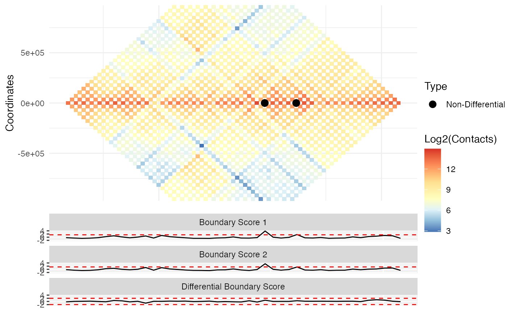

Visualization of differential TAD boundaries
DiffPlot( tad_diff, cont_mat1, cont_mat2, resolution, start_coord, end_coord, pre_tad = NULL, show_types = TRUE, point_size = 3, max_height = 25, rel_heights = c(2, 1), palette = "RdYlBu" )
| tad_diff | Raw object output by TADCompare. Required. |
|---|---|
| cont_mat1 | contact matrix in either sparse 3 column, n x n or n x (n+3) form where the first three columns are coordinates in BED format. See "Input_Data" vignette for more information. If an x n matrix is used, the column names must correspond to the start point of the corresponding bin. Should correspond to the first contact matrix input into TADCompare. Required. |
| cont_mat2 | contact matrix in either sparse 3 column, n x n or n x (n+3) form where the first three columns are coordinates in BED format. If an x n matrix is used, the column names must correspond to the start point of the corresponding bin. Should correspond to the second contact matrix input into TADCompare. Required. |
| resolution | Resolution of the data. Required. |
| start_coord | The start coordinate defining a region to plot. Required. |
| end_coord | The end coordinate defining a region to plot. Required. |
| pre_tad | A list of pre-defined TADs for drawing. Must contain two entries with the first corresponding to TADs detected in matrix 1 and the second to those detected in matrix 2. Each entry must contain a BED-like data frame or GenomicRanges object with columns "chr", "start", and "end", corresponding to coordinates of TADs. Must correspond to TADCompare results obtained for the same pre-defined TADs. Optional |
| show_types | If FALSE only the labels "Differential" and "Non-Differential" will be used. More in-depth differential boundary types will be excluded. Default is TRUE. |
| point_size | Parameter used to adjust the size of boundary points on heatmap plot. Default is 3. |
| max_height | Maximum height in bins that should be displayed on the heatmap plot. Default is 25. |
| rel_heights | Proportion of the size of the heatmap and score panels. Should be a vector containing the relative size of each panel with the heatmap panel coming first and the score panel second. Default is c(2, 1). |
| palette | Parameter used to adjust color palette. For list of palettes see https://rdrr.io/cran/RColorBrewer/man/ColorBrewer.html. Alternatively, users can define a vector of color names or hex codes. Default is 'RdYlBu' |
A ggplot plot containing a visualization of the upper diagonal both contact matrices with types of non-/differential boundaries labeled. The first matrix is shown on top and the second on the bottom. If pre_tad is provided, then the outline of the pre-defined TADs are shown. Individual TAD score and differential TAD scores are shown below the contact matrix plots.
Given a TADCompare object and two corresponding contact matrices, Diff_Plot provides visualization of user-specified regions of the genome with accompanying differential annotations, TAD scores and differential TAD scores
# Read in data data("rao_chr22_prim") data("rao_chr22_rep") # Find differential TAD boundaries tad_diff <- TADCompare(rao_chr22_prim, rao_chr22_rep, resolution = 50000) # Create plot DiffPlot(tad_diff,rao_chr22_prim, rao_chr22_rep, resolution = 50000, start_coord = 22050000, end_coord = 24150000)